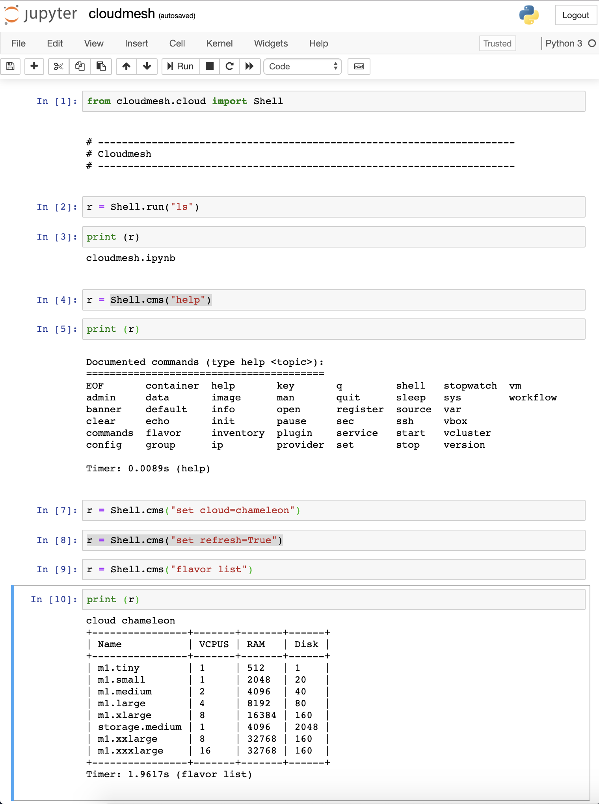

Jupyter Integration¶
To install jupyter please use:
pip install jupyter
To start a notebuk use the regular jupyter command
jupyter notebook
Now select under new the name of the notbook you like to create, and make sure you use python 3. As cloudmesh provides an API it is very easy to integrate it into jupyter. The following image shows how easy it is
{kind=link}
However, naturally we can also use build in fetuares of jupyter such as running shell commands with
[1] !cms set cloud=AWS
[2] !cms vm star
API calls¶
To use the specific API calls, We recommend you to look at the API documentation of cloudmesh. To show you a simple example of advanced functionality we demonstarte how to list flavors of a cloud:
from cloudmesh.compute.vm.Provider import Provider
provider = Provider(name="chameleon")
flavors = provider.flavors()
flavors[0]['name']
'm1.tiny'
provider.Print(flavors)
+----------------+-------+-------+------+
| Name | VCPUS | RAM | Disk |
+----------------+-------+-------+------+
| m1.tiny | 1 | 512 | 1 |
| m1.small | 1 | 2048 | 20 |
| m1.medium | 2 | 4096 | 40 |
| m1.large | 4 | 8192 | 80 |
| m1.xlarge | 8 | 16384 | 160 |
| storage.medium | 1 | 4096 | 2048 |
| m1.xxlarge | 8 | 32768 | 160 |
| m1.xxxlarge | 16 | 32768 | 160 |
+----------------+-------+-------+------+